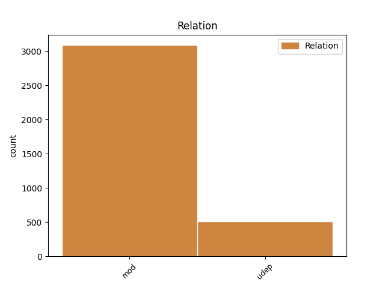
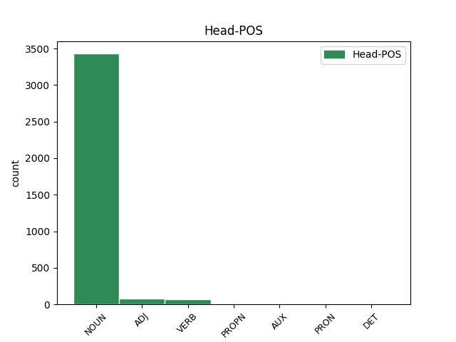
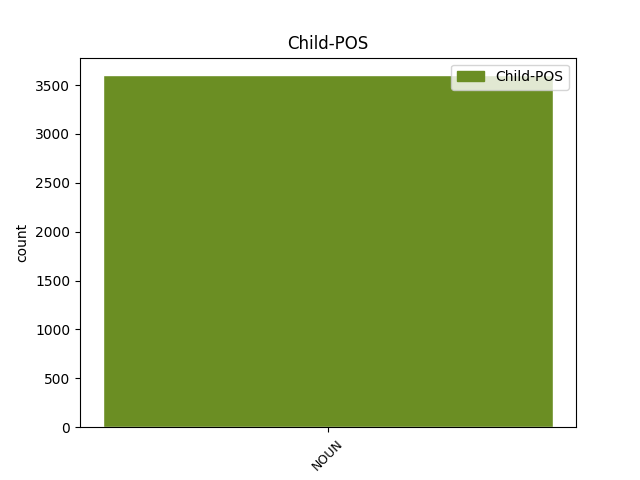

Distribution of features within this leaf



Agreement Rules sorted by frequency.
- When the dependent token is the modifer(mod) of the head token, and the head token is NOUN and the dependent token is NOUN.
1 Slična _ _ _ _ 0 _ _ _
2 debata _ _ _ _ 0 _ _ _
3 o _ _ _ _ 0 _ _ _
4 korisnosti _ _ _ _ 0 _ _ _
5 naspram _ _ _ _ 0 _ _ _
6 štetnosti štetnost NOUN Ncfsg Case=Gen|Gender=Fem|Number=Sing 0 _ _ _
7 nove _ _ _ _ 0 _ _ _
8 tehnologije tehnologija NOUN Ncfsg Case=Gen|Gender=Fem|Number=Sing 6 mod _ _
9 se _ _ _ _ 0 _ _ _
10 dugo _ _ _ _ 0 _ _ _
11 vodi _ _ _ _ 0 _ _ _
12 i _ _ _ _ 0 _ _ _
13 po _ _ _ _ 0 _ _ _
14 pitanju _ _ _ _ 0 _ _ _
15 opravdanosti _ _ _ _ 0 _ _ _
16 korišćenja _ _ _ _ 0 _ _ _
17 nuklearne _ _ _ _ 0 _ _ _
18 energije _ _ _ _ 0 _ _ _
19 s _ _ _ _ 0 _ _ _
20 obzirom _ _ _ _ 0 _ _ _
21 na _ _ _ _ 0 _ _ _
22 zastrašujuće _ _ _ _ 0 _ _ _
23 posledice _ _ _ _ 0 _ _ _
24 koje _ _ _ _ 0 _ _ _
25 kvar _ _ _ _ 0 _ _ _
26 u _ _ _ _ 0 _ _ _
27 tako _ _ _ _ 0 _ _ _
28 osetljivom _ _ _ _ 0 _ _ _
29 sistemu _ _ _ _ 0 _ _ _
30 može _ _ _ _ 0 _ _ _
31 da _ _ _ _ 0 _ _ _
32 ima _ _ _ _ 0 _ _ _
33 . _ _ _ _ 0 _ _ _
1 Prekidanje prekidanje NOUN Ncnsn Case=Nom|Gender=Neut|Number=Sing 0 _ _ _
2 spavanja spavanje NOUN Ncnsg Case=Gen|Gender=Neut|Number=Sing 1 udep _ _
3 tokom _ _ _ _ 0 _ _ _
4 REM _ _ _ _ 0 _ _ _
5 faze _ _ _ _ 0 _ _ _
6 ostavlja _ _ _ _ 0 _ _ _
7 teže _ _ _ _ 0 _ _ _
8 posledice _ _ _ _ 0 _ _ _
9 nego _ _ _ _ 0 _ _ _
10 prekid _ _ _ _ 0 _ _ _
11 bilo _ _ _ _ 0 _ _ _
12 koje _ _ _ _ 0 _ _ _
13 druge _ _ _ _ 0 _ _ _
14 faze _ _ _ _ 0 _ _ _
15 sna _ _ _ _ 0 _ _ _
16 . _ _ _ _ 0 _ _ _
1 Danas _ _ _ _ 0 _ _ _
2 , _ _ _ _ 0 _ _ _
3 recimo _ _ _ _ 0 _ _ _
4 , _ _ _ _ 0 _ _ _
5 mnoge _ _ _ _ 0 _ _ _
6 velike _ _ _ _ 0 _ _ _
7 firme _ _ _ _ 0 _ _ _
8 za _ _ _ _ 0 _ _ _
9 proizvodnju _ _ _ _ 0 _ _ _
10 tehnike _ _ _ _ 0 _ _ _
11 poput _ _ _ _ 0 _ _ _
12 Samsunga _ _ _ _ 0 _ _ _
13 nude _ _ _ _ 0 _ _ _
14 pametne _ _ _ _ 0 _ _ _
15 frižidere _ _ _ _ 0 _ _ _
16 ( _ _ _ _ 0 _ _ _
17 Family _ _ _ _ 0 _ _ _
18 Hub _ _ _ _ 0 _ _ _
19 frižider _ _ _ _ 0 _ _ _
20 ) _ _ _ _ 0 _ _ _
21 prilagođene prilagoditi ADJ Appfpay Case=Acc|Definite=Def|Degree=Pos|Gender=Fem|Number=Plur|VerbForm=Part|Voice=Pass 0 _ _ _
22 bežičnoj _ _ _ _ 0 _ _ _
23 blutut _ _ _ _ 0 _ _ _
24 tehnologiji tehnologija NOUN Ncfsd Case=Dat|Gender=Fem|Number=Sing 21 udep _ SpaceAfter=No
25 , _ _ _ _ 0 _ _ _
26 koja _ _ _ _ 0 _ _ _
27 omogućava _ _ _ _ 0 _ _ _
28 korisniku _ _ _ _ 0 _ _ _
29 da _ _ _ _ 0 _ _ _
30 recimo _ _ _ _ 0 _ _ _
31 pušta _ _ _ _ 0 _ _ _
32 muziku _ _ _ _ 0 _ _ _
33 sa _ _ _ _ 0 _ _ _
34 svog _ _ _ _ 0 _ _ _
35 pametnog _ _ _ _ 0 _ _ _
36 telefona _ _ _ _ 0 _ _ _
37 ili _ _ _ _ 0 _ _ _
38 kompjutera _ _ _ _ 0 _ _ _
39 na _ _ _ _ 0 _ _ _
40 jednom _ _ _ _ 0 _ _ _
41 takvom _ _ _ _ 0 _ _ _
42 frižideru _ _ _ _ 0 _ _ _
43 . _ _ _ _ 0 _ _ _
1 Tada _ _ _ _ 0 _ _ _
2 bih _ _ _ _ 0 _ _ _
3 se _ _ _ _ 0 _ _ _
4 vraćao _ _ _ _ 0 _ _ _
5 „ _ _ _ _ 0 _ _ _
6 proverenim _ _ _ _ 0 _ _ _
7 ” _ _ _ _ 0 _ _ _
8 knjigama _ _ _ _ 0 _ _ _
9 , _ _ _ _ 0 _ _ _
10 koje _ _ _ _ 0 _ _ _
11 sa _ _ _ _ 0 _ _ _
12 svakim _ _ _ _ 0 _ _ _
13 novim _ _ _ _ 0 _ _ _
14 čitanjem _ _ _ _ 0 _ _ _
15 pojačavaju _ _ _ _ 0 _ _ _
16 optiku _ _ _ _ 0 _ _ _
17 , _ _ _ _ 0 _ _ _
18 postoje _ _ _ _ 0 _ _ _
19 u _ _ _ _ 0 _ _ _
20 pamćenju _ _ _ _ 0 _ _ _
21 nepromenjenog _ _ _ _ 0 _ _ _
22 intenziteta _ _ _ _ 0 _ _ _
23 , _ _ _ _ 0 _ _ _
24 svejedno _ _ _ _ 0 _ _ _
25 u _ _ _ _ 0 _ _ _
26 kakvom _ _ _ _ 0 _ _ _
27 raspoloženju _ _ _ _ 0 _ _ _
28 se _ _ _ _ 0 _ _ _
29 prepuštao prepuštati VERB Vmp-sm Gender=Masc|Number=Sing|Tense=Past|VerbForm=Part|Voice=Act 0 _ _ _
30 tekstu tekst NOUN Ncmsd Case=Dat|Gender=Masc|Number=Sing 29 udep _ SpaceAfter=No
31 . _ _ _ _ 0 _ _ _
1 Ulica _ _ _ _ 0 _ _ _
2 u _ _ _ _ 0 _ _ _
3 kojoj _ _ _ _ 0 _ _ _
4 smo _ _ _ _ 0 _ _ _
5 odrasli _ _ _ _ 0 _ _ _
6 , _ _ _ _ 0 _ _ _
7 i _ _ _ _ 0 _ _ _
8 koju _ _ _ _ 0 _ _ _
9 smo _ _ _ _ 0 _ _ _
10 napustili _ _ _ _ 0 _ _ _
11 , _ _ _ _ 0 _ _ _
12 da _ _ _ _ 0 _ _ _
13 bismo _ _ _ _ 0 _ _ _
14 se _ _ _ _ 0 _ _ _
15 nakon _ _ _ _ 0 _ _ _
16 tri _ _ _ _ 0 _ _ _
17 , _ _ _ _ 0 _ _ _
18 ili _ _ _ _ 0 _ _ _
19 četiri _ _ _ _ 0 _ _ _
20 decenije _ _ _ _ 0 _ _ _
21 ponovo _ _ _ _ 0 _ _ _
22 vratili _ _ _ _ 0 _ _ _
23 , _ _ _ _ 0 _ _ _
24 nije _ _ _ _ 0 _ _ _
25 ista _ _ _ _ 0 _ _ _
26 ulica _ _ _ _ 0 _ _ _
27 , _ _ _ _ 0 _ _ _
28 zatrpana _ _ _ _ 0 _ _ _
29 je _ _ _ _ 0 _ _ _
30 životima _ _ _ _ 0 _ _ _
31 koji _ _ _ _ 0 _ _ _
32 su _ _ _ _ 0 _ _ _
33 se _ _ _ _ 0 _ _ _
34 odvijali _ _ _ _ 0 _ _ _
35 u _ _ _ _ 0 _ _ _
36 našem _ _ _ _ 0 _ _ _
37 odsustvu _ _ _ _ 0 _ _ _
38 , _ _ _ _ 0 _ _ _
39 i _ _ _ _ 0 _ _ _
40 zalud _ _ _ _ 0 _ _ _
41 ćemo _ _ _ _ 0 _ _ _
42 u _ _ _ _ 0 _ _ _
43 detalju _ _ _ _ 0 _ _ _
44 sa _ _ _ _ 0 _ _ _
45 fasade _ _ _ _ 0 _ _ _
46 neke _ _ _ _ 0 _ _ _
47 kuće _ _ _ _ 0 _ _ _
48 koji _ _ _ _ 0 _ _ _
49 je _ _ _ _ 0 _ _ _
50 ostao _ _ _ _ 0 _ _ _
51 nepromenjen _ _ _ _ 0 _ _ _
52 , _ _ _ _ 0 _ _ _
53 i _ _ _ _ 0 _ _ _
54 lebdi _ _ _ _ 0 _ _ _
55 u _ _ _ _ 0 _ _ _
56 bezmerju bezmerje PROPN Npnsl Case=Loc|Gender=Neut|Number=Sing 0 _ _ _
57 našeg _ _ _ _ 0 _ _ _
58 pamćenja pamćenje NOUN Ncnsg Case=Gen|Gender=Neut|Number=Sing 56 mod _ _
59 kao _ _ _ _ 0 _ _ _
60 parče _ _ _ _ 0 _ _ _
61 jarbola _ _ _ _ 0 _ _ _
62 nakon _ _ _ _ 0 _ _ _
63 brodoloma _ _ _ _ 0 _ _ _
64 , _ _ _ _ 0 _ _ _
65 pokušavati _ _ _ _ 0 _ _ _
66 da _ _ _ _ 0 _ _ _
67 uspostavimo _ _ _ _ 0 _ _ _
68 ulicu _ _ _ _ 0 _ _ _
69 koje _ _ _ _ 0 _ _ _
70 više _ _ _ _ 0 _ _ _
71 nema _ _ _ _ 0 _ _ _
72 . _ _ _ _ 0 _ _ _
1 Širenje _ _ _ _ 0 _ _ _
2 aktivacije _ _ _ _ 0 _ _ _
3 je _ _ _ _ 0 _ _ _
4 istraživačima istraživač NOUN Ncmpd Case=Dat|Gender=Masc|Number=Plur 5 udep _ _
5 bio biti AUX Vap-sm Gender=Masc|Number=Sing|Tense=Past|VerbForm=Part|Voice=Act 0 _ _ _
6 znak _ _ _ _ 0 _ _ _
7 da _ _ _ _ 0 _ _ _
8 problem _ _ _ _ 0 _ _ _
9 sagledaju _ _ _ _ 0 _ _ _
10 iz _ _ _ _ 0 _ _ _
11 drugog _ _ _ _ 0 _ _ _
12 ugla _ _ _ _ 0 _ _ _
13 i _ _ _ _ 0 _ _ _
14 izuče _ _ _ _ 0 _ _ _
15 inhibitornu _ _ _ _ 0 _ _ _
16 aktivnost _ _ _ _ 0 _ _ _
17 serotoninskih _ _ _ _ 0 _ _ _
18 receptora _ _ _ _ 0 _ _ _
19 . _ _ _ _ 0 _ _ _
1 Društvo _ _ _ _ 0 _ _ _
2 , _ _ _ _ 0 _ _ _
3 tzv. _ _ _ _ 0 _ _ _
4 obični _ _ _ _ 0 _ _ _
5 ljudi _ _ _ _ 0 _ _ _
6 , _ _ _ _ 0 _ _ _
7 često _ _ _ _ 0 _ _ _
8 su _ _ _ _ 0 _ _ _
9 pokvareni pokvariti ADJ Appmpny Case=Nom|Definite=Def|Degree=Pos|Gender=Masc|Number=Plur|VerbForm=Part|Voice=Pass 0 _ _ _
10 koliko _ _ _ _ 0 _ _ _
11 i _ _ _ _ 0 _ _ _
12 sami _ _ _ _ 0 _ _ _
13 zločinci zločinac NOUN Ncmpn Case=Nom|Gender=Masc|Number=Plur 9 mod _ SpaceAfter=No
14 , _ _ _ _ 0 _ _ _
15 pa _ _ _ _ 0 _ _ _
16 nije _ _ _ _ 0 _ _ _
17 dovoljno _ _ _ _ 0 _ _ _
18 samo _ _ _ _ 0 _ _ _
19 prstom _ _ _ _ 0 _ _ _
20 pokazati _ _ _ _ 0 _ _ _
21 na _ _ _ _ 0 _ _ _
22 ubicu _ _ _ _ 0 _ _ _
23 , _ _ _ _ 0 _ _ _
24 već _ _ _ _ 0 _ _ _
25 ga _ _ _ _ 0 _ _ _
26 treba _ _ _ _ 0 _ _ _
27 lično _ _ _ _ 0 _ _ _
28 uhvatiti _ _ _ _ 0 _ _ _
29 , _ _ _ _ 0 _ _ _
30 kazniti _ _ _ _ 0 _ _ _
31 , _ _ _ _ 0 _ _ _
32 a _ _ _ _ 0 _ _ _
33 nekada _ _ _ _ 0 _ _ _
34 i _ _ _ _ 0 _ _ _
35 pustiti _ _ _ _ 0 _ _ _
36 , _ _ _ _ 0 _ _ _
37 ako _ _ _ _ 0 _ _ _
38 se _ _ _ _ 0 _ _ _
39 ispostavi _ _ _ _ 0 _ _ _
40 da _ _ _ _ 0 _ _ _
41 je _ _ _ _ 0 _ _ _
42 manje _ _ _ _ 0 _ _ _
43 kriv _ _ _ _ 0 _ _ _
44 od _ _ _ _ 0 _ _ _
45 žrtve _ _ _ _ 0 _ _ _
46 . _ _ _ _ 0 _ _ _
1 Naučna _ _ _ _ 0 _ _ _
2 radnica radnica NOUN Ncfsn Case=Nom|Gender=Fem|Number=Sing 6 mod _ _
3 i _ _ _ _ 0 _ _ _
4 ekonomista _ _ _ _ 0 _ _ _
5 , _ _ _ _ 0 _ _ _
6 ona on PRON Pp3fsn Case=Nom|Gender=Fem|Number=Sing|Person=3|PronType=Prs 0 _ _ _
7 se _ _ _ _ 0 _ _ _
8 pridružila _ _ _ _ 0 _ _ _
9 Svetskoj _ _ _ _ 0 _ _ _
10 banci _ _ _ _ 0 _ _ _
11 1993 _ _ _ _ 0 _ _ _
12 , _ _ _ _ 0 _ _ _
13 gde _ _ _ _ 0 _ _ _
14 je _ _ _ _ 0 _ _ _
15 u _ _ _ _ 0 _ _ _
16 početku _ _ _ _ 0 _ _ _
17 radila _ _ _ _ 0 _ _ _
18 na _ _ _ _ 0 _ _ _
19 pitanjima _ _ _ _ 0 _ _ _
20 životne _ _ _ _ 0 _ _ _
21 sredine _ _ _ _ 0 _ _ _
22 , _ _ _ _ 0 _ _ _
23 a _ _ _ _ 0 _ _ _
24 kasnije _ _ _ _ 0 _ _ _
25 na _ _ _ _ 0 _ _ _
26 socijalnim _ _ _ _ 0 _ _ _
27 pitanjima _ _ _ _ 0 _ _ _
28 . _ _ _ _ 0 _ _ _
Disagree Examples:
1 Kazna kazna NOUN Ncfsn Case=Nom|Gender=Fem|Number=Sing 0 _ _ _
2 medijskom _ _ _ _ 0 _ _ _
3 mogulu mogul NOUN Ncmsd Case=Dat|Gender=Masc|Number=Sing 1 mod _ _
4 obnovila _ _ _ _ 0 _ _ _
5 debatu _ _ _ _ 0 _ _ _
6 u _ _ _ _ 0 _ _ _
7 Makedoniji _ _ _ _ 0 _ _ _
1 Neki _ _ _ _ 0 _ _ _
2 tvrde _ _ _ _ 0 _ _ _
3 da _ _ _ _ 0 _ _ _
4 je _ _ _ _ 0 _ _ _
5 presuda _ _ _ _ 0 _ _ _
6 Veliji _ _ _ _ 0 _ _ _
7 Ramkovskom _ _ _ _ 0 _ _ _
8 napad _ _ _ _ 0 _ _ _
9 na _ _ _ _ 0 _ _ _
10 slobodu sloboda NOUN Ncfsa Case=Acc|Gender=Fem|Number=Sing 0 _ _ _
11 medija medij NOUN Ncmpg Case=Gen|Gender=Masc|Number=Plur 10 mod _ SpaceAfter=No
12 , _ _ _ _ 0 _ _ _
13 ali _ _ _ _ 0 _ _ _
14 drugi _ _ _ _ 0 _ _ _
15 tvrde _ _ _ _ 0 _ _ _
16 da _ _ _ _ 0 _ _ _
17 dokazi _ _ _ _ 0 _ _ _
18 o _ _ _ _ 0 _ _ _
19 njegovim _ _ _ _ 0 _ _ _
20 krivičnim _ _ _ _ 0 _ _ _
21 delima _ _ _ _ 0 _ _ _
22 govore _ _ _ _ 0 _ _ _
23 suprotno _ _ _ _ 0 _ _ _
24 . _ _ _ _ 0 _ _ _
1 Medijski _ _ _ _ 0 _ _ _
2 mogul _ _ _ _ 0 _ _ _
3 Velija _ _ _ _ 0 _ _ _
4 Ramkovski _ _ _ _ 0 _ _ _
5 osuđen _ _ _ _ 0 _ _ _
6 je _ _ _ _ 0 _ _ _
7 na _ _ _ _ 0 _ _ _
8 13 _ _ _ _ 0 _ _ _
9 godina godina NOUN Ncfpg Case=Gen|Gender=Fem|Number=Plur 0 _ _ _
10 zatvora zatvor NOUN Ncmsg Case=Gen|Gender=Masc|Number=Sing 9 mod _ _
11 zbog _ _ _ _ 0 _ _ _
12 utaje _ _ _ _ 0 _ _ _
13 poreza _ _ _ _ 0 _ _ _
14 i _ _ _ _ 0 _ _ _
15 pranja _ _ _ _ 0 _ _ _
16 novca _ _ _ _ 0 _ _ _
17 . _ _ _ _ 0 _ _ _
1 Medijski _ _ _ _ 0 _ _ _
2 mogul _ _ _ _ 0 _ _ _
3 Velija _ _ _ _ 0 _ _ _
4 Ramkovski _ _ _ _ 0 _ _ _
5 osuđen _ _ _ _ 0 _ _ _
6 je _ _ _ _ 0 _ _ _
7 na _ _ _ _ 0 _ _ _
8 13 _ _ _ _ 0 _ _ _
9 godina _ _ _ _ 0 _ _ _
10 zatvora _ _ _ _ 0 _ _ _
11 zbog _ _ _ _ 0 _ _ _
12 utaje utaja NOUN Ncfsg Case=Gen|Gender=Fem|Number=Sing 0 _ _ _
13 poreza porez NOUN Ncmsg Case=Gen|Gender=Masc|Number=Sing 12 udep _ _
14 i _ _ _ _ 0 _ _ _
15 pranja _ _ _ _ 0 _ _ _
16 novca _ _ _ _ 0 _ _ _
17 . _ _ _ _ 0 _ _ _
1 Medijski _ _ _ _ 0 _ _ _
2 mogul _ _ _ _ 0 _ _ _
3 Velija _ _ _ _ 0 _ _ _
4 Ramkovski _ _ _ _ 0 _ _ _
5 osuđen _ _ _ _ 0 _ _ _
6 je _ _ _ _ 0 _ _ _
7 na _ _ _ _ 0 _ _ _
8 13 _ _ _ _ 0 _ _ _
9 godina _ _ _ _ 0 _ _ _
10 zatvora _ _ _ _ 0 _ _ _
11 zbog _ _ _ _ 0 _ _ _
12 utaje _ _ _ _ 0 _ _ _
13 poreza _ _ _ _ 0 _ _ _
14 i _ _ _ _ 0 _ _ _
15 pranja pranje NOUN Ncnsg Case=Gen|Gender=Neut|Number=Sing 0 _ _ _
16 novca novac NOUN Ncmsg Case=Gen|Gender=Masc|Number=Sing 15 udep _ SpaceAfter=No
17 . _ _ _ _ 0 _ _ _